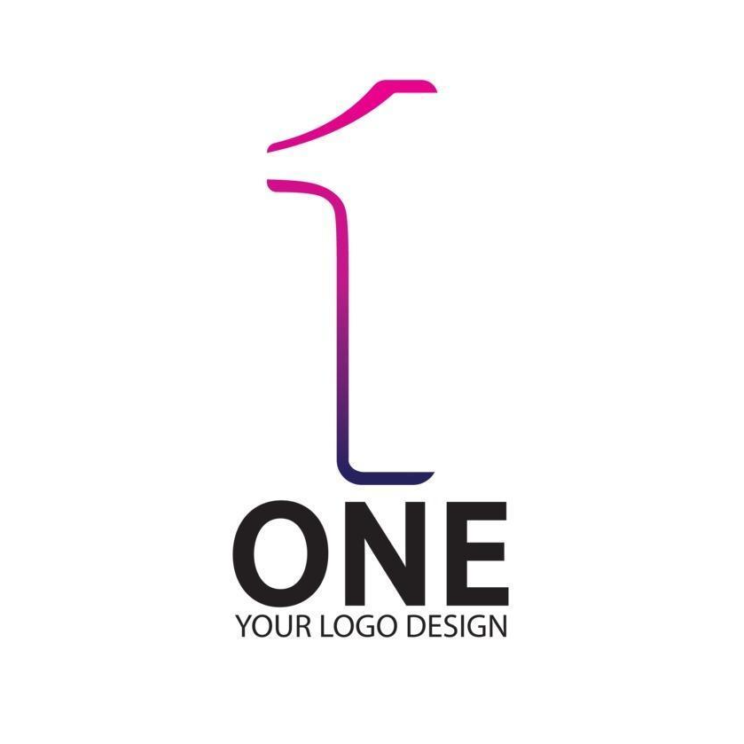

About Tyun
I am a web developer with front-end expertise. Languages I use are HTMl, CSS, JavaScript, and C#. Framework I use is Tailwind. Vetë kompania është një kompani shumë e suksesshme. A e udhëheqim veten të verbuar nga epshi? Punë e vështirë, dhimbje? Ne nuk mund të udhëheqim asgjë me të cilën lavdëruesit mund të na japin lehtësisht kënaqësinë dhe atë dhimbje. Kjo është mënyra për ta bërë atë!
Projects
